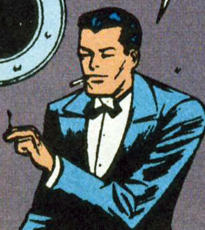

-HOME-

Hi my name is Manuel I love comics, video Games, and Movies. A little bit about me... I was born January 14th
1996 In Albuquerque NM. As i grew up i got to know more people and meet new friends. But when i ws young i loved
video games! My first ever game console was a game boy. Played games like Bomber Man, Mario, etc. And as time went
bye i got to play PS2 games like Ratchet and Clank, Sly cooper, Jak and Daxter, War of the monsters, etc.
Online Identity
So what I saw for my internet search was nothing but Pablo Escobar and
facebook manuel's on there site. Glad i didn't see myself on there. I
have never liked being stocked online. I only like family and friends
see what i do.
References
PDF RESUME
Burner
MOZILLA
mySQL
LinkedIn
My Resume!
Manuel Leroy Escobar III
538 Muscatel Albuquerque, NM, 87107 Phone Number: (505) 615-1476 email: manuel.esco.20@gmail.com
Work Experience
- Panera, Albuquerque, NM 2015-2016
- Cash register
Dish washer
Preparing food
Worked with a lot of people
Worked over a year
- Dion’s, Albuquerque, NM 2017 July - October
- Making Salad’s, Pizza’s, and Sub’s etc...
Staying Busy
Maintain clean environment
Worked over 3 months
- Education
- Graduate from Valley High School 2015
GPA: 3.5
Additional skills
Artist
Html (web design) just getting started
Volunteered at Zoo
References
Alyssa Montoya – (505) 240-0870
Bob Carroll – (505) 991-3965
Becky Goggans – (505) 507-3433
---REFLECTIONS---
- Week 0
- Week one was a good start for the week getting to know every one. I cant wait to get started
and get into learning a lot for these 10 weeks!
- Week 1
- We are learning a lot now getting into backend type of code and OOP (Object-oriented programming)
and we have been working with PHP! All this is new and a little confusing at times but
with hard work and knowing what you're doing always pays off.
- Week 2
- w2 Activity
- I Have been told I have potential before, and I want to work hard on my goals. I do believe it.
And i really want to push myself to do good things for myself!
- Week 3
- We are now getting started with capstone and working on what will we be finishing on in the future
- Week 4
- We got to Learn a lot about OOP and mySQL and CSS. And we recently got
started with Bootsrap
- (Forbidden Island)
- Working together was very fun and nice to see. We all learned together as a team and got through a good chunk
of the game.
MY ORGS
- juxtapozemedia.com
- simplydesigninc.com
My Pro Email
To whom it may concern, I am writing to enquire about your business.
I am seeking for Volunteer work or Position that may be open. I am currently
doing classes in Deep Dive Coding working in Fullstack Web Development. I am a
Novice developer. But have been a quick learner and enjoy challenge's set before
me. I have had some experience before my CNM classes courses working on HTML and
CSS. But now i have been working on OOP, JS, mySQL, and PHP just to name a few.
I enjoy working on code and getting to work with groups. I would love to have a
chat some time and learn more about the company and some of the requirements
you have. If you want to contact me here is my EMAIL: manuel.esco.20@gmail.com
I wish all of you the best regards.
sincerely Manuel L Escobar III
GOLDEN CIRCLE:
- ---WHY---Innovate the industry in new and exiting ways!
- ---HOW---Starting from the beginning of coding working myself up to higher expectation and meeting goals.
- ---WHAT---Seeing What else i can get out of coding learning more new languages in code and such.
- key: What + Why + How + Question
- Hi my name is Manuel Escobar and wanting to learn more code languages and get
as much out of its as i can. To innovate the Industry with new and exiting ideas.
And how I will do this is just getting started! Ill work myself up to achieve many
goals and standards set on my path. So what will you do to achieve something great?
Quantitative Accomplishments!:
- I have accomplished beating many video game achievement
- I accomplished fixing things wrong with my truck
- Building my first web site prototype
Qualitative Accomplishments!:
- creative
- artistic
- motivated